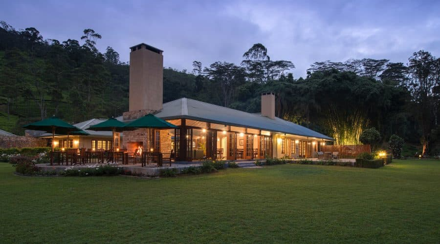
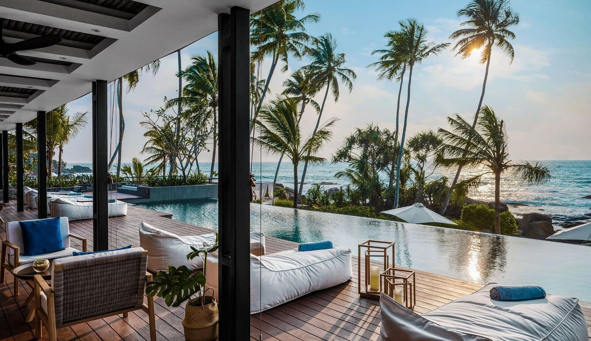
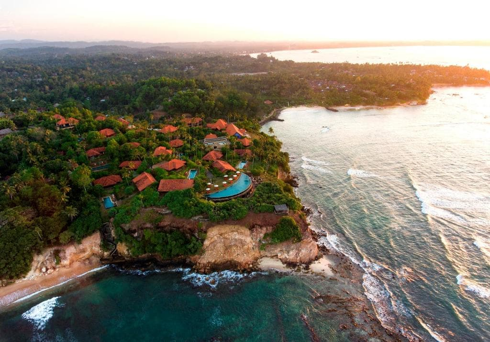

Explore Our World
Ceylon Tea Trails
Ceylon Tea Trails is a collection of five beautifully restored colonial bungalows nestled in the rolling hills of Sri Lanka's Central Highlands. Each bungalow is surrounded by lush tea plantations and offers stunning views of the surrounding countryside. The bungalows are all insectionidually decorated and furnished, and they offer a variety of amenities, including private pools, balconies, and dining rooms. Guests can enjoy a variety of activities during their stay, including tea tastings, nature walks, and game drives.
There are five bungalows
- Norwood Bungalow: This is the largest bungalow and has a swimming pool, tennis court, and croquet lawn.
- Castlereagh Bungalow: This bungalow is located on the shores of Castlereagh Lake and has stunning views of the surrounding mountains.
- Dunkeld Bungalow: This bungalow is set in a secluded location and is surrounded by lush forests.
- Summerville Bungalow: This bungalow is the smallest of the five and is located in a quiet corner of the valley.
- Tientsin Bungalow: This bungalow is the newest of the five and has a modern design.
Ahu Bay
Ahu Bay is a hidden gem on the south coast of Sri Lanka. It is a secluded bay with a beautiful white sand beach and crystal clear waters. The bay is surrounded by lush green hills and coconut trees, providing a stunning backdrop. Ahu Bay is a great place to relax and unwind. The beach is perfect for swimming, sunbathing, and snorkeling. There are also a few small shops and restaurants in the area, so you can easily get everything you need. If you are looking for a peaceful and relaxing getaway, Ahu Bay is the perfect place for you.
Things to do:
Ahu Bay is a place of beauty and tranquility. The calm waters of the bay are a perfect place to swim, kayak, or simply relax on the beach. The surrounding hills are lush and green, and the air is filled with the sound of birdsong.
Ahu Bay is also a place of history. The name Ahu comes from the ancient stone platforms that were used by the early inhabitants of Sri Lanka. These platforms can still be seen today, and they offer a glimpse into the island's rich past.
Ahu Bay is a special place that is sure to leave a lasting impression. Whether you are looking for a relaxing vacation or a place to learn about Sri Lanka's history, Ahu Bay is the perfect destination.
Cape Weligama

Cape Weligama is a luxury resort located on the south coast of Sri Lanka. It is situated on a promontory overlooking the Indian Ocean, offering stunning views of the coastline and the surrounding hills. The resort is surrounded by lush tropical gardens and has its own private beach.
The villas at Cape Weligama are spacious and luxurious, with private pools and balconies. They are decorated in a contemporary style and feature all the amenities guests need for a comfortable stay. The resort also has a variety of dining options, a spa, and a fitness center.
Cape Weligama is a popular destination for couples and honeymooners. It is also a good choice for families, as there are plenty of activities for children to enjoy. The resort is committed to sustainability and has a number of environmental initiatives in place.
Cape Weligama is a hidden gem on the south coast of Sri Lanka. It is a place of peace and tranquility, where guests can relax and rejuvenate in the stunning natural surroundings. The resort is situated on a promontory overlooking the Indian Ocean, with panoramic views of the coastline and the surrounding hills.
The villas at Cape Weligama are spacious and luxurious, with private pools and balconies. They are decorated in a stylish and understated manner, using natural materials and local artwork. The resort also has a number of dining options, a spa, and a fitness center.
The staff at Cape Weligama are friendly and attentive, and they are committed to providing guests with a memorable stay. The resort is also committed to sustainability, and it has a number of environmental initiatives in place.
Cape Weligama is the perfect place to escape the hustle and bustle of everyday life and reconnect with nature. It is a place where guests can relax and rejuvenate, and create memories that will last a lifetime.
| Branch | Amenities | Available prices and packages |
|---|---|---|
| Ceylon Tea Trails |
|
Standard: $470/night, Deluxe: $570/night, Premium: $670/night |
| Ahu Bay, Ahungalla |
|
Basic: $300/night, Premium: $700/night, Deluxe: $1,000/night, Executive: $1,300/night, Presidential: $2,000/night |
| Cape Weligama |
|
Basic: $300/night, Premium: $700/night, Deluxe: $1,000/night, Executive: $1,300/night, Presidential: $2,000/night |
Feel free to contact us for more infomation |
||